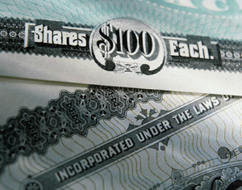

|
|
Rules of Thumb for Gifting Programs
 Here are some considerations to keep in mind regarding gifting strategies:
Consider making lifetime gifts where estate tax exposure exists in the future, but in most cases payment of a gift tax is to be avoided Click here for an illustration.
When making gifts to reduce the size of the estate, property with high likelihood of future appreciation should generally be gifted first Click here for an illustration.
When gifting to family and friends, generally avoid gifting low-basis securities Click here for an illustration.
- When gifting to charities, it is generally preferable to give low-basis securities. Click here for an illustration.
IllustrationAssume that a client owned real estate that is located in a rapidly developing area of town. The property is currently valued at $700,000, but is expected to double in value over the next 5 years. By transferring that property as soon as possible to his children, he could effectively keep the future appreciation out of his estate. He could use a combination of his annual Gift Tax Exclusion (claiming one annual gift tax exclusion per child) and his Applicable Exclusion Amount to avoid paying taxes on the gift. |
|
This time, assume a client holds stocks with a market value of $500,000 and a basis of $25,000. The client’s remaining securities have had negligible appreciation. If the client transfers these low-basis stocks during life, the client must value the transfers at their current market price for gift tax purposes; but the client will also be transferring their low basis. When the children go to sell the stocks, they will have to pay the capital gains tax. If the client has no plans to sell the stocks during life, then the client would be better off holding them until death, when the estate receives a step-up in tax basis. By doing so, approximately $100,000 in capital gains taxes could be avoided. |
|
With charities, first consideration should be given to highly appreciated securities, i.e., low-basis securities. For example, suppose a client decided to make a lifetime charitable gift of $50,000 to a church, using $50,000 of stocks with a tax basis of $5,000. The gift would be valued at $50,000, for which the client could potentially take a deduction on the income tax return. The charity would receive the $50,000 of stocks, with its basis of $5,000, but could sell the stocks without having to pay capital gains taxes since it is a charity. This is truly a win-win scenario. The client makes the gift, gets the deduction on income taxes on the full value of the asset, and avoids the capital gains tax; the charity is then free to sell the asset and receives the full value of the gift with no capital gains tax. |
|
Lifetime gifts are a valid consideration as long as there is potential estate tax exposure. The potential donor certainly needs to weigh the cost associated with no longer having control of the funds against the potential estate tax exposure. But where such exposure exists, making tax-free gifts through use of the annual gift tax exclusion, gifts for tuition and medical care, and gifts to charities can result in significant estate tax savings. For sizeable estates, where the donor can safely part with the money, consideration can also be given to gifts in excess of the annual gift tax exclusion, so long as the cumulative amount does not exceed the gift tax Applicable Exclusion Amount of $5,450,000 (in 2016). Gifts in excess of the gift tax Applicable Exclusion Amount are generally not advisable, as they will result in payment of a transfer tax that could be deferred if the excess was retained in the estate. |